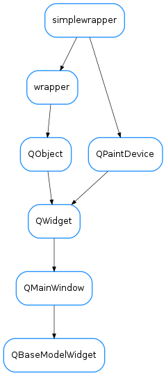

QBaseModelWidget¶

-
class
QBaseModelWidget(parent=None, designMode=False, with_filter_widget=True, with_selection_widget=True, with_refresh_widget=True, perspective=None, proxy=None)[source]¶ Bases:
PyQt4.QtGui.QMainWindowA pure Qt widget designed to display a Qt view widget (QTreeView for example), envolved by optional toolbar and statusbar. The Qt model associated with the internal Qt view widget should be a
taurus.qt.qtcore.model.TaurusBaseModel-
DftPerspective= None¶
-
KnownPerspectives= {}¶
-
currentItemChanged¶
-
itemClicked¶
-
itemDoubleClicked¶
-
itemSelectionChanged¶
-